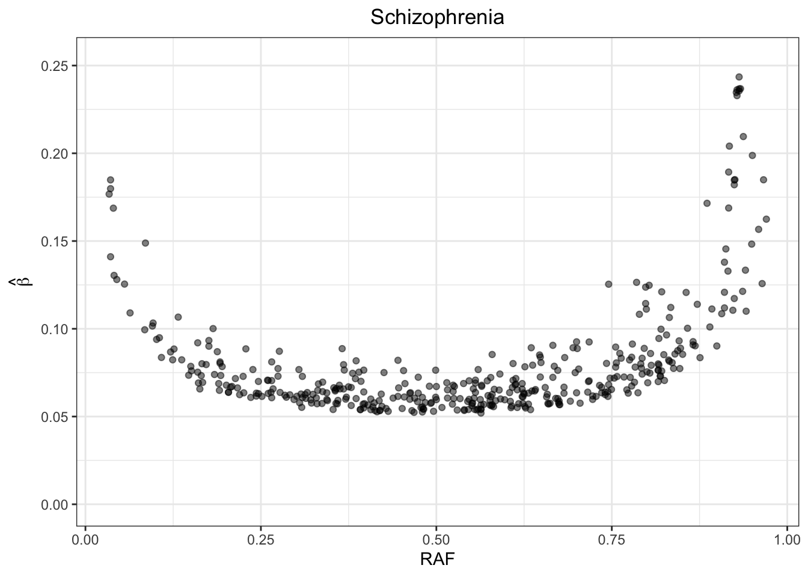
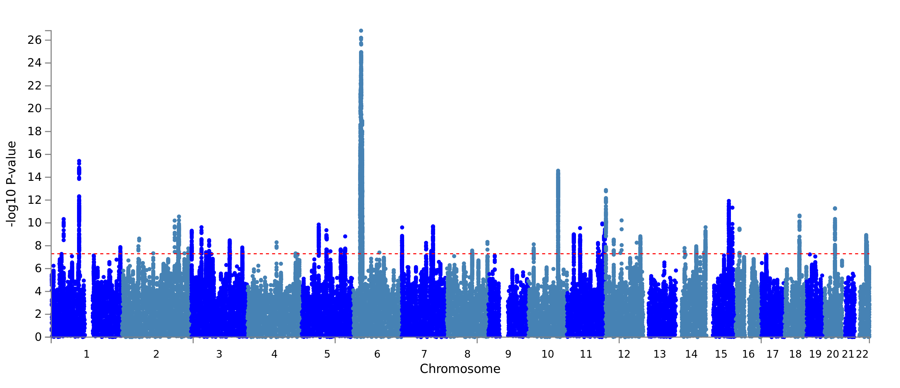
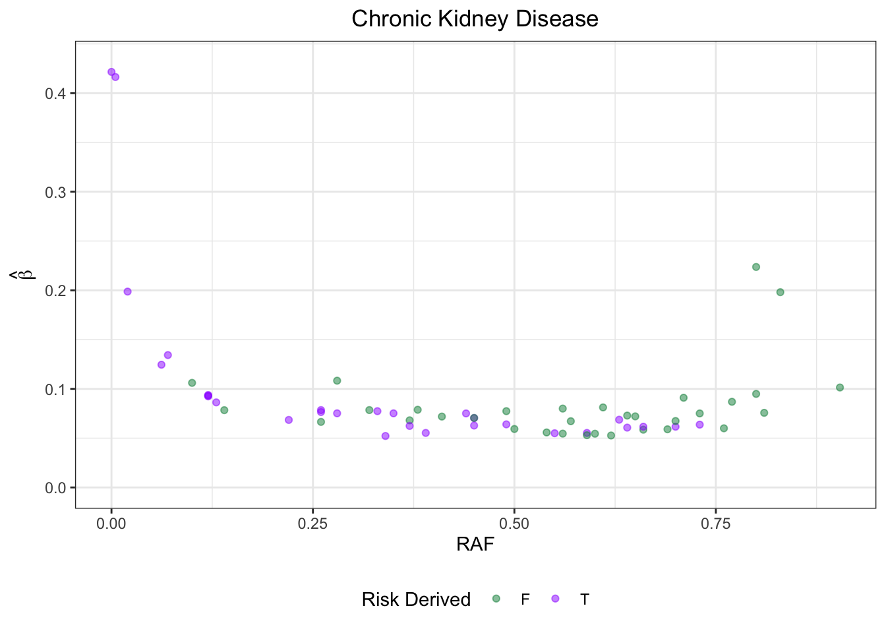
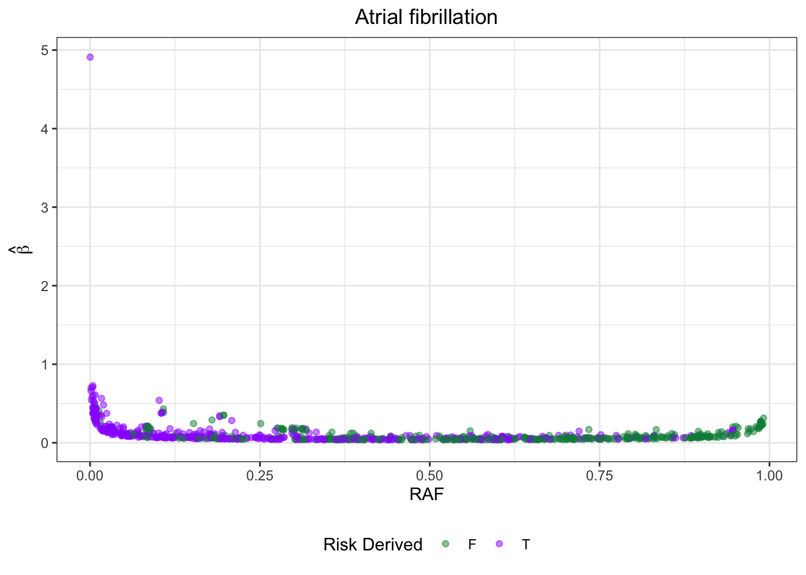
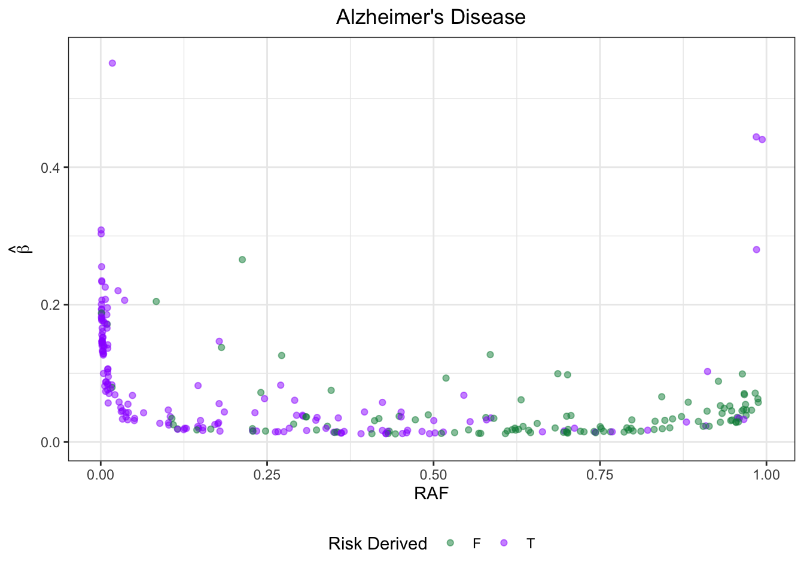
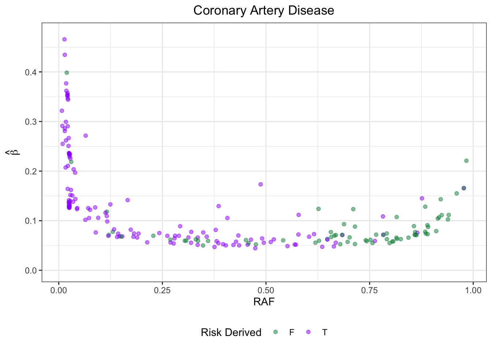
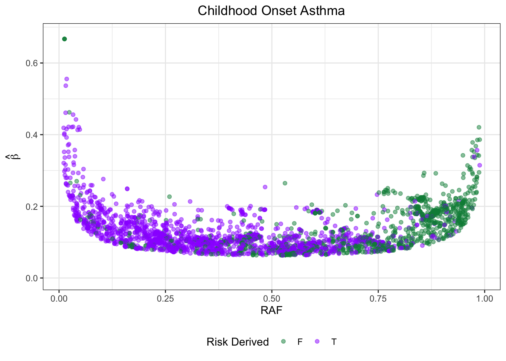
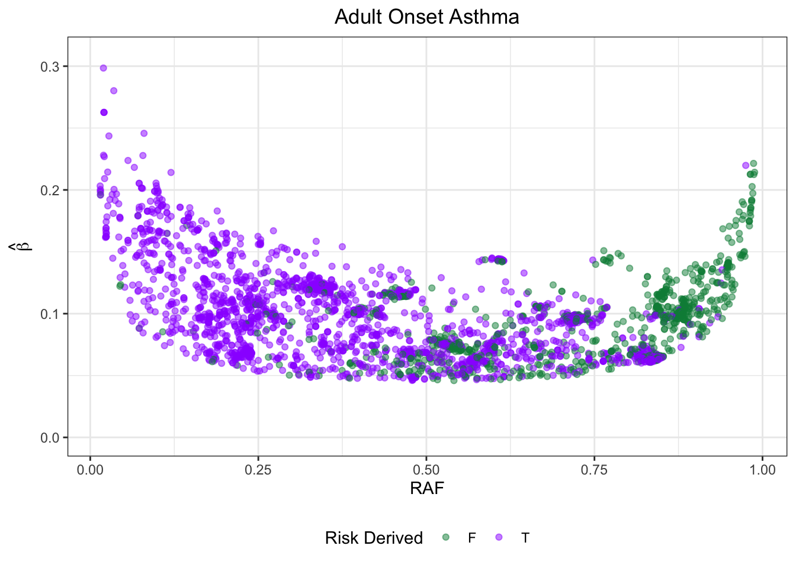
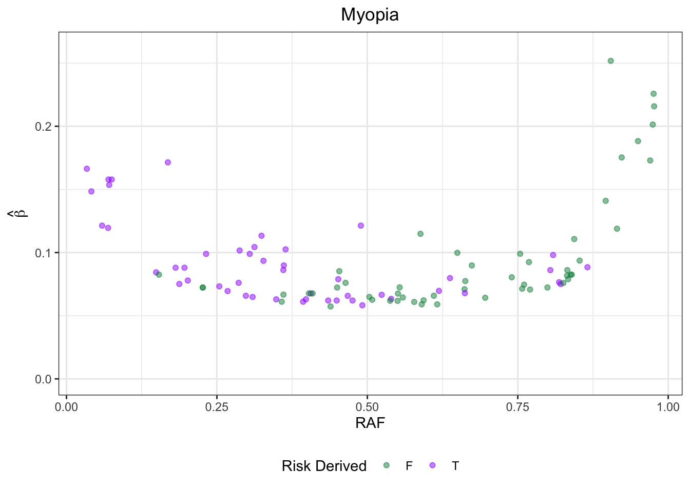
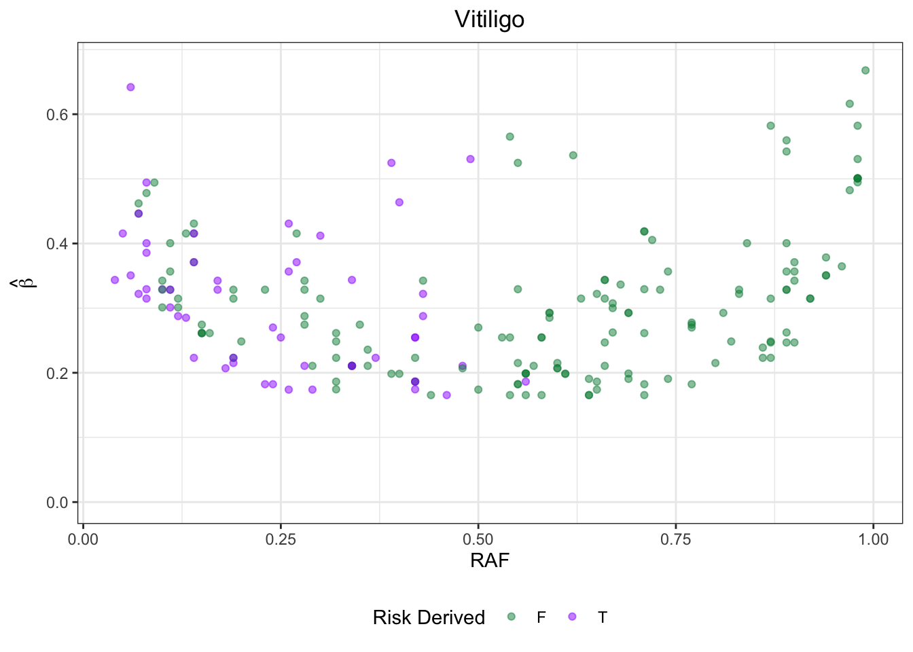

GWAS_ATLAS_results
Jennifer Blanc
1/23/2020
Last updated: 2020-03-31
Checks: 7 0
Knit directory: infer_mutational_bias/analysis/
This reproducible R Markdown analysis was created with workflowr (version 1.6.0). The Checks tab describes the reproducibility checks that were applied when the results were created. The Past versions tab lists the development history.
Great! Since the R Markdown file has been committed to the Git repository, you know the exact version of the code that produced these results.
Great job! The global environment was empty. Objects defined in the global environment can affect the analysis in your R Markdown file in unknown ways. For reproduciblity it’s best to always run the code in an empty environment.
The command set.seed(20191108) was run prior to running the code in the R Markdown file. Setting a seed ensures that any results that rely on randomness, e.g. subsampling or permutations, are reproducible.
Great job! Recording the operating system, R version, and package versions is critical for reproducibility.
Nice! There were no cached chunks for this analysis, so you can be confident that you successfully produced the results during this run.
Great job! Using relative paths to the files within your workflowr project makes it easier to run your code on other machines.
Great! You are using Git for version control. Tracking code development and connecting the code version to the results is critical for reproducibility. The version displayed above was the version of the Git repository at the time these results were generated.
Note that you need to be careful to ensure that all relevant files for the analysis have been committed to Git prior to generating the results (you can use wflow_publish or wflow_git_commit). workflowr only checks the R Markdown file, but you know if there are other scripts or data files that it depends on. Below is the status of the Git repository when the results were generated:
Ignored files:
Ignored: .DS_Store
Ignored: .Rhistory
Ignored: .Rproj.user/
Ignored: .snakemake/conda-archive/
Ignored: .snakemake/conda/
Ignored: .snakemake/locks/
Ignored: .snakemake/shadow/
Ignored: .snakemake/singularity/
Ignored: analysis/.DS_Store
Ignored: code/.DS_Store
Ignored: code/parse_gwas_atlas/.DS_Store
Ignored: code/parse_gwas_atlas_nonsig/.DS_Store
Ignored: data/.ipynb_checkpoints/
Ignored: data/1000G_20101123_v3_GIANT_chr1_23_minimacnamesifnotRS_CEU_MAF0.01/
Ignored: data/47UKBB/
Ignored: data/ALL.chr1.phase3_shapeit2_mvncall_integrated_v5a.20130502.genotypes.EUR/
Ignored: data/BBJ/
Ignored: data/GWAS_ATLAS/
Ignored: data/STRAT/
Ignored: data/UKBB/
Ignored: output/.DS_Store
Ignored: output/47UKBB/
Ignored: output/BBJ/.DS_Store
Ignored: output/GWAS_ATLAS/
Ignored: output/STRAT/
Ignored: output/UKBB/.DS_Store
Untracked files:
Untracked: .snakemake/log/2020-03-23T164719.122778.snakemake.log
Untracked: .snakemake/log/2020-03-23T164841.172341.snakemake.log
Untracked: .snakemake/log/2020-03-23T165052.235224.snakemake.log
Untracked: .snakemake/log/2020-03-23T173201.671245.snakemake.log
Untracked: .snakemake/log/2020-03-23T190924.512591.snakemake.log
Untracked: .snakemake/log/2020-03-23T194341.864454.snakemake.log
Untracked: .snakemake/log/2020-03-24T091905.302205.snakemake.log
Untracked: .snakemake/log/2020-03-24T092201.882781.snakemake.log
Untracked: .snakemake/log/2020-03-24T092404.171989.snakemake.log
Untracked: .snakemake/log/2020-03-24T092428.802361.snakemake.log
Untracked: .snakemake/log/2020-03-24T093017.568005.snakemake.log
Untracked: .snakemake/log/2020-03-24T093241.050903.snakemake.log
Untracked: .snakemake/log/2020-03-24T093254.384314.snakemake.log
Untracked: .snakemake/log/2020-03-24T093258.136407.snakemake.log
Untracked: .snakemake/log/2020-03-24T093449.542770.snakemake.log
Untracked: .snakemake/log/2020-03-24T111104.620227.snakemake.log
Untracked: .snakemake/log/2020-03-24T111633.863041.snakemake.log
Untracked: .snakemake/log/2020-03-24T111701.823844.snakemake.log
Untracked: .snakemake/log/2020-03-24T152044.472618.snakemake.log
Untracked: .snakemake/log/2020-03-24T152202.883346.snakemake.log
Untracked: .snakemake/log/2020-03-24T152218.356089.snakemake.log
Untracked: .snakemake/log/2020-03-24T152224.553347.snakemake.log
Untracked: .snakemake/log/2020-03-24T152253.175681.snakemake.log
Untracked: .snakemake/log/2020-03-24T152612.976687.snakemake.log
Untracked: .snakemake/log/2020-03-24T152904.986735.snakemake.log
Untracked: .snakemake/log/2020-03-24T154155.249321.snakemake.log
Untracked: .snakemake/log/2020-03-24T154220.752872.snakemake.log
Untracked: .snakemake/log/2020-03-24T154225.402696.snakemake.log
Untracked: .snakemake/log/2020-03-24T154242.303180.snakemake.log
Untracked: .snakemake/log/2020-03-24T154540.706170.snakemake.log
Untracked: .snakemake/log/2020-03-24T154744.109794.snakemake.log
Untracked: .snakemake/log/2020-03-24T154756.043621.snakemake.log
Untracked: .snakemake/log/2020-03-24T155047.465119.snakemake.log
Untracked: .snakemake/log/2020-03-24T155100.393951.snakemake.log
Untracked: .snakemake/log/2020-03-24T155721.217180.snakemake.log
Untracked: .snakemake/log/2020-03-24T155802.251555.snakemake.log
Untracked: .snakemake/log/2020-03-24T155823.527017.snakemake.log
Untracked: .snakemake/log/2020-03-24T160158.325053.snakemake.log
Untracked: .snakemake/log/2020-03-24T160554.632453.snakemake.log
Untracked: .snakemake/log/2020-03-24T160813.358275.snakemake.log
Untracked: .snakemake/log/2020-03-24T161022.670871.snakemake.log
Untracked: .snakemake/log/2020-03-24T161257.193338.snakemake.log
Untracked: .snakemake/log/2020-03-30T171337.338623.snakemake.log
Untracked: .snakemake/metadata/b3V0cHV0L0dXQVNfQVRMQVMvZXZvX2FkZGVkL0NBRF8zOTI1LTAuMDAwMV9ldm8udHh0
Untracked: .snakemake/metadata/b3V0cHV0L0dXQVNfQVRMQVMvZXZvX2FkZGVkL1QyRF80MDg1LTAuMDAwMV9ldm8udHh0
Untracked: .snakemake/metadata/b3V0cHV0L0dXQVNfQVRMQVMvZXZvX2FkZGVkL1VDXzIwMzAtMC4wMDAxX2V2by50eHQ=
Untracked: .snakemake/metadata/b3V0cHV0L0dXQVNfQVRMQVMvZXZvX2FkZGVkL2hlaWdodF8xNDItMC4wMDAxX2V2by50eHQ=
Untracked: .snakemake/metadata/b3V0cHV0L0dXQVNfQVRMQVMvZXZvX2FkZGVkL3NjaGl6b3BocmVuaWFfMzk4Mi0wLjAwMDFfZXZvLnR4dA==
Untracked: .snakemake/metadata/b3V0cHV0L0dXQVNfQVRMQVMvcGFyc2VkX2d3YXMvQ0FEXzM5MjVfMC4wMDAxX3BhcnNlZC50eHQ=
Untracked: .snakemake/metadata/b3V0cHV0L0dXQVNfQVRMQVMvcGFyc2VkX2d3YXMvVDJEXzQwODVfMC4wMDAxX3BhcnNlZC50eHQ=
Untracked: .snakemake/metadata/b3V0cHV0L0dXQVNfQVRMQVMvcGFyc2VkX2d3YXMvVUNfMjAzMF8wLjAwMDFfcGFyc2VkLnR4dA==
Untracked: .snakemake/metadata/b3V0cHV0L0dXQVNfQVRMQVMvcGFyc2VkX2d3YXMvaGVpZ2h0XzE0Ml8wLjAwMDFfcGFyc2VkLnR4dA==
Untracked: .snakemake/metadata/b3V0cHV0L0dXQVNfQVRMQVMvcGFyc2VkX2d3YXMvc2NoaXpvcGhyZW5pYV8zOTgyXzAuMDAwMV9wYXJzZWQudHh0
Untracked: .snakemake/metadata/b3V0cHV0L0dXQVNfQVRMQVMvcHJ1bmVkL0NBRF8zOTI1XzAuMDAwMS5wcnVuZS5pbg==
Untracked: .snakemake/metadata/b3V0cHV0L0dXQVNfQVRMQVMvcHJ1bmVkL1QyRF80MDg1XzAuMDAwMS5wcnVuZS5pbg==
Untracked: .snakemake/metadata/b3V0cHV0L0dXQVNfQVRMQVMvcHJ1bmVkL1VDXzIwMzBfMC4wMDAxLnBydW5lLmlu
Untracked: .snakemake/metadata/b3V0cHV0L0dXQVNfQVRMQVMvcHJ1bmVkL2hlaWdodF8xNDJfMC4wMDAxLnBydW5lLmlu
Untracked: .snakemake/metadata/b3V0cHV0L0dXQVNfQVRMQVMvcHJ1bmVkL3NjaGl6b3BocmVuaWFfMzk4Ml8wLjAwMDEucHJ1bmUuaW4=
Untracked: .snakemake/scripts/tmp7997be50.get_evolutionary_information_from_1kg_GWAS_ATLAS.py
Untracked: code/parse_gwas_atlas_nonsig/height_142.R
Untracked: code/rsID_Pos_conversion.py
Untracked: code/rsID_Pos_conversion.py~
Unstaged changes:
Modified: .snakemake/metadata/b3V0cHV0L1NUUkFUL3BydW5lZC9jaHIxX0VVUl8wLjA1LmVpZ2VudmVjLnZhci5EQS5wcnVuZS5pbg==
Modified: .snakemake/metadata/b3V0cHV0L1NUUkFUL3BydW5lZC9jaHIxX0VVUl8wLjAxLmVpZ2VudmVjLnZhci5EQS5wcnVuZS5pbg==
Modified: .snakemake/metadata/b3V0cHV0L1NUUkFUL3BydW5lZC9jaHIxX0VVUl8wLjEuZWlnZW52ZWMudmFyLkRBLnBydW5lLmlu
Modified: .snakemake/metadata/b3V0cHV0L1NUUkFUL3BydW5lZC9jaHIxX0VVUl8wLjIuZWlnZW52ZWMudmFyLkRBLnBydW5lLmlu
Modified: .snakemake/metadata/b3V0cHV0L1NUUkFUL3BydW5lZC9jaHIxX0VVUl8wLjMuZWlnZW52ZWMudmFyLkRBLnBydW5lLmlu
Modified: .snakemake/metadata/b3V0cHV0L1NUUkFUL3BydW5lZC9jaHIxX0VVUl8wLjQuZWlnZW52ZWMudmFyLkRBLnBydW5lLmlu
Modified: analysis/Stratification.Rmd
Modified: analysis/shift_GWAS_ATLAS.Rmd
Modified: code/parse_gwas_atlas_nonsig/CAD_3925.R
Modified: code/parse_gwas_atlas_nonsig/T2D_4085.R
Modified: code/parse_gwas_atlas_nonsig/UC_2030.R
Modified: code/parse_gwas_atlas_nonsig/schizophrenia_3982.R
Modified: snakefile
Modified: snakefile~
Note that any generated files, e.g. HTML, png, CSS, etc., are not included in this status report because it is ok for generated content to have uncommitted changes.
These are the previous versions of the R Markdown and HTML files. If you’ve configured a remote Git repository (see ?wflow_git_remote), click on the hyperlinks in the table below to view them.
| File | Version | Author | Date | Message |
|---|---|---|---|---|
| Rmd | 8131b8a | jgblanc | 2020-03-31 | test pics |
| html | 0c60cc4 | jgblanc | 2020-03-31 | Build site. |
| Rmd | 01e2446 | jgblanc | 2020-03-31 | test insert pic |
| html | d0354c3 | jgblanc | 2020-03-30 | Build site. |
| Rmd | e430043 | jgblanc | 2020-03-30 | fixed labels |
| html | 3765dc0 | jgblanc | 2020-03-30 | Build site. |
| Rmd | 42c0ed0 | jgblanc | 2020-03-30 | work please |
| Rmd | 3bae1e0 | jgblanc | 2020-03-10 | added freq Strat |
| Rmd | 6d9fe78 | jgblanc | 2020-03-05 | more stuff |
| html | b868ae9 | jgblanc | 2020-02-11 | Build site. |
| Rmd | d7244a2 | jgblanc | 2020-02-11 | Added Median Plot |
| html | 0ec351c | jgblanc | 2020-02-03 | Build site. |
| Rmd | 9134df6 | jgblanc | 2020-02-03 | added more GWAS |
| Rmd | ae228f8 | jgblanc | 2020-01-30 | parsing GWAS atlas |
| html | eb46920 | jgblanc | 2020-01-24 | Build site. |
| html | 75fc4f0 | jgblanc | 2020-01-24 | Build site. |
| html | f507bb5 | jgblanc | 2020-01-24 | Build site. |
| html | 7694f8a | jgblanc | 2020-01-24 | Build site. |
| Rmd | e9fc5ca | jgblanc | 2020-01-24 | Start of GWAS atlas analysis |
library(data.table)
library(ggplot2)
library(ggpubr)
library(latex2exp)
library(dplyr)Intro
Write overview
Results
'%!in%' <- function(x,y)!('%in%'(x,y))
HLA <- seq(28477797,33448354)
remove_HLA <- function(df) {
bad <- subset(df, df$CHR == 6 & df$BP %in% HLA)
bad_snps <- bad$SNP
good <- df %>% filter(SNP %!in% bad_snps)
return(good)
}Schizophrenia - Meta analysis
Manhattan Plot
RAF vs Effect Size 

| Version | Author | Date |
|---|---|---|
| 0c60cc4 | jgblanc | 2020-03-31 |
Remove HLA Region 
Mean/Median RAF
mean(schizophrenia$RAF)[1] 0.5423082median(schizophrenia$RAF)[1] 0.5596Notes on SNP research
Schizophrenia - Psychiatric Genomic Consortium
Manhattan Plot

RAF vs Effect Size 
Remove HLA Region
dat <- remove_HLA(scz_pgc)
ggplot(data=dat, aes(x=RAF,y=abs(log(OR)),color=Risk_Derived)) + geom_point(alpha=0.5) + theme_bw() + scale_color_manual(values = derive) + theme(plot.title = element_text(hjust = 0.5)) + ggtitle("Schizophrenia PGC") + labs(y = TeX('$\\hat{\\beta}$'), color = "Risk Derived") + ylim(0,max(abs(log(dat$OR)))+0.01) + theme(plot.title = element_text(hjust = 0.5), legend.position = "bottom")
Mean/Median RAF
mean(scz_pgc$RAF)[1] 0.6278304median(scz_pgc$RAF)[1] 0.6486087Schizophrenia EAS - not LD clumped!
Manhattan Plot
RAF vs Effect Size - not LD clumped 
Remove HLA Region
dat <- remove_HLA(scz_eas)
ggplot(data=dat, aes(x=RAF,y=abs(log(OR)),color=Risk_Derived)) + geom_point(alpha=0.5) + theme_bw() + scale_color_manual(values = derive) + theme(plot.title = element_text(hjust = 0.5)) + ggtitle("Schizophrenia EAS") + labs(y = TeX('$\\hat{\\beta}$'), color = "Risk Derived") + ylim(0,max(abs(log(dat$OR)))+0.01) + theme(plot.title = element_text(hjust = 0.5), legend.position = "bottom")
Mean/Median RAF
mean(scz_eas$RAF)[1] 0.5055854median(scz_eas$RAF)[1] 0.5078767Chronic Kidney Disease

[1] 0.4609823Atrial Fibrilation 
[1] 0.3791902Atrial Fibrilation - remove top hit 
[1] 0.3796268CAD 
[1] 0.3686692Type 2 Diabetes 
[1] 0.5162338Crohns 
Breast Cancer 
[1] 0.3836395Alzheimer’s Disease
[1] 0.3997422Parkinson 
[1] 0.4737009IBD 
[1] 0.3132487Ulcerative Colitis

[1] 0.2535299Childhood Onset Asthma
[1] 0.5071093Adult Onset Asthma 
| Version | Author | Date |
|---|---|---|
| 0c60cc4 | jgblanc | 2020-03-31 |
[1] 0.5277265Multiple Sclerosis 
| Version | Author | Date |
|---|---|---|
| 0c60cc4 | jgblanc | 2020-03-31 |
[1] 0.5867623Myopia
[1] 0.5233334Educational Attainment - UKBB only 
[1] 0.1689608Educational Attainment - meta-analysis
[1] 0.4982147BMI
[1] 0.4937467PBC
[1] 0.4586081Vitiligo
[1] 0.4924878Bipolar Disorder 
[1] 0.4335857Median RAF
sessionInfo()R version 3.6.2 (2019-12-12)
Platform: x86_64-apple-darwin15.6.0 (64-bit)
Running under: macOS High Sierra 10.13.6
Matrix products: default
BLAS: /Library/Frameworks/R.framework/Versions/3.6/Resources/lib/libRblas.0.dylib
LAPACK: /Library/Frameworks/R.framework/Versions/3.6/Resources/lib/libRlapack.dylib
locale:
[1] en_US.UTF-8/en_US.UTF-8/en_US.UTF-8/C/en_US.UTF-8/en_US.UTF-8
attached base packages:
[1] stats graphics grDevices utils datasets methods base
other attached packages:
[1] dplyr_0.8.4 latex2exp_0.4.0 ggpubr_0.2.5 magrittr_1.5
[5] ggplot2_3.2.1 data.table_1.12.8 workflowr_1.6.0
loaded via a namespace (and not attached):
[1] Rcpp_1.0.3 compiler_3.6.2 pillar_1.4.3 later_1.0.0
[5] git2r_0.26.1 tools_3.6.2 digest_0.6.25 evaluate_0.14
[9] lifecycle_0.1.0 tibble_2.1.3 gtable_0.3.0 pkgconfig_2.0.3
[13] rlang_0.4.4 yaml_2.2.1 xfun_0.12 withr_2.1.2
[17] stringr_1.4.0 knitr_1.28 vctrs_0.2.3 fs_1.3.1
[21] rprojroot_1.3-2 grid_3.6.2 tidyselect_1.0.0 glue_1.3.1
[25] R6_2.4.1 rmarkdown_2.1 farver_2.0.3 purrr_0.3.3
[29] whisker_0.4 backports_1.1.5 scales_1.1.0 promises_1.1.0
[33] htmltools_0.4.0 assertthat_0.2.1 colorspace_1.4-1 ggsignif_0.6.0
[37] httpuv_1.5.2 labeling_0.3 stringi_1.4.6 lazyeval_0.2.2
[41] munsell_0.5.0 crayon_1.3.4